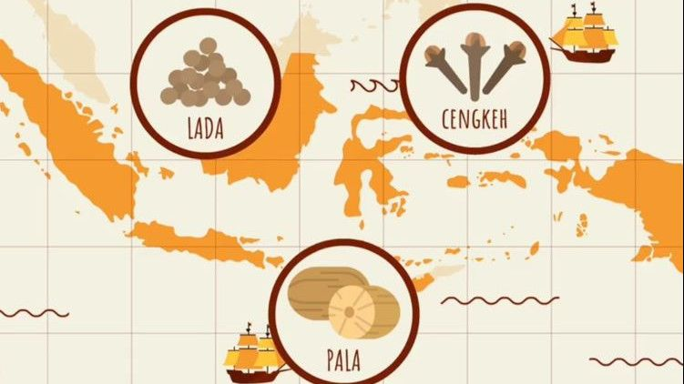

Indonesia bukan hanya terkenal sebagai negeri yang indah dan kaya budaya, tetapi juga sebagai pusat rempah-rempah dunia sejak ribuan tahun lalu. Aroma cengkeh, pala, lada, kayu manis, dan berbagai rempah Nusantara telah menarik bangsa-bangsa dari seluruh penjuru dunia untuk datang ke kepulauan ini.
Awal Mula: Ketika Nusantara Menjadi Rebutan Dunia
Sejak abad ke-5, pedagang dari India, Arab, hingga Cina sudah datang ke wilayah Indonesia untuk mencari rempah. Pada masa itu, rempah memiliki nilai yang luar biasa:
- Sebagai obat dan penawar berbagai penyakit.
- Sebagai bahan pengawet makanan.
- Sebagai komoditas bernilai tinggi yang hanya dimiliki Nusantara.
Bahkan, harga lada dan pala pada masa itu bisa bernilai setara emas di Eropa.
Kedatangan Bangsa Eropa
Pada abad ke-16, bangsa Portugis, Spanyol, Belanda, dan Inggris berebut menguasai jalur perdagangan rempah. Tujuan utama mereka sederhana:
Kepulauan Maluku menjadi pusat perhatian dunia karena hanya di sanalah pala dan cengkeh terbaik tumbuh alami. Kedatangan bangsa Eropa kemudian mengubah sejarah panjang Nusantara, dari perdagangan, kolonialisme, hingga lahirnya hubungan global.
Rempah dan Identitas Kuliner Nusantara
Kekayaan rempah bukan hanya tentang perdagangan, tetapi juga membentuk karakter kuliner Indonesia. Setiap daerah memiliki campuran bumbu khas yang mencerminkan budaya lokal.
Beberapa contoh kuliner berbasis rempah:
- Rendang – Sumatera Barat
- Gulai – berbagai daerah
- Coto Makassar – Sulawesi Selatan
- Rawon – Jawa Timur
- Papeda Kuah Kuning – Papua
Dari Sabang hingga Merauke, rempah menjadi bahasa bersama yang menyatukan cita rasa Nusantara.
Warisan yang Terus Hidup
Kini, jalur rempah resmi diakui sebagai salah satu warisan budaya tak benda Indonesia dan mulai diperkenalkan kembali kepada dunia. Rempah tidak hanya dilihat sebagai bahan masakan, tetapi juga identitas bangsa.
Jejak rempah adalah pengingat bahwa Nusantara pernah menjadi pusat perhatian dunia—dan hingga kini, aromanya tetap mengharumkan bumi Indonesia.